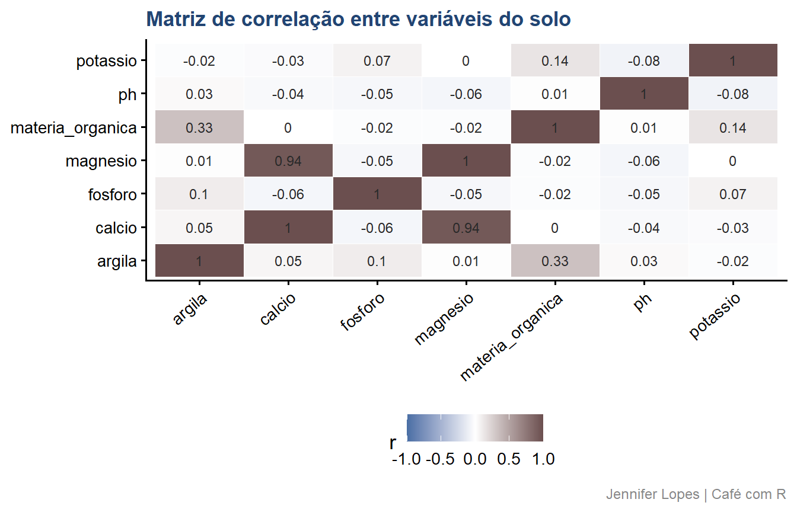
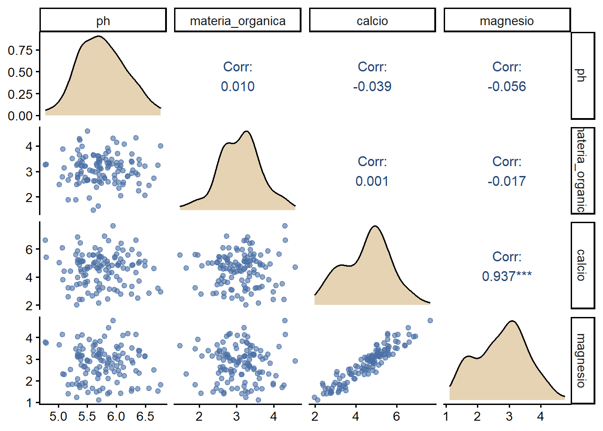

Aula 48. Correlação, multicolinearidade e pairs plot
Correlação alta não significa causalidade, mas também não significa que você pode ignorar multicolinearidade no modelo
Acompanhe o Café com R
Que cada gole desperte uma nova ideia.
Que cada script abra uma nova conversa.
Que o Café com R se torne um ponto de encontro nosso.
SITE OFICIAL > https://jenniferlopes.github.io/meu_site/
Objetivos da aula
- Calcular e interpretar o coeficiente de correlação de Pearson
- Entender por que correlação alta não implica relação de causa e efeito
- Diagnosticar multicolinearidade em um modelo de regressão com o fator de inflação de variância
- Visualizar correlações e distribuições simultaneamente com um pairs plot
Bloco 1
Correlação
Conceito, coeficiente de correlação de Pearson
\[r = \frac{\sum_{i=1}^{n}(x_i - \bar{x})(y_i - \bar{y})}{\sqrt{\sum_{i=1}^{n}(x_i-\bar{x})^2}\sqrt{\sum_{i=1}^{n}(y_i-\bar{y})^2}}\]
- \(r\) varia entre -1 e 1, mede a força e a direção da associação linear entre duas variáveis contínuas.
| Magnitude, em módulo | Interpretação |
|---|---|
| Até 0,3 | Correlação fraca |
| 0,3 a 0,6 | Correlação moderada |
| Acima de 0,6 | Correlação forte |
Código: matriz de correlação
Output: matriz e mapa de calor
# A tibble: 7 × 8
variavel ph materia_organica argila calcio magnesio potassio fosforo
<chr> <dbl> <dbl> <dbl> <dbl> <dbl> <dbl> <dbl>
1 ph 1 0.01 0.03 -0.04 -0.06 -0.08 -0.05
2 materia_organi… 0.01 1 0.33 0 -0.02 0.14 -0.02
3 argila 0.03 0.33 1 0.05 0.01 -0.02 0.1
4 calcio -0.04 0 0.05 1 0.94 -0.03 -0.06
5 magnesio -0.06 -0.02 0.01 0.94 1 0 -0.05
6 potassio -0.08 0.14 -0.02 -0.03 0 1 0.07
7 fosforo -0.05 -0.02 0.1 -0.06 -0.05 0.07 1 
- Cálcio e magnésio apresentam a correlação mais alta da matriz, seguidos por matéria orgânica e argila. Essas duas relações fortes conduzem diretamente à discussão dos próximos blocos.
Bloco 2
Correlação x Causalidade
Por que correlação alta não implica causalidade
Uma correlação alta entre duas variáveis indica que elas variam juntas, não indica qual delas, se alguma, causa a outra.
Duas variáveis podem estar correlacionadas por três razões distintas: uma causa a outra, ambas são causadas por uma terceira variável, uma variável de confusão, ou a correlação é uma coincidência amostral.
Important
Atenção: afirmar causalidade a partir de uma correlação observacional, sem um desenho experimental que isole a variável de interesse, é uma inferência que os dados de correlação, isoladamente, não sustentam.
Exemplo, variável de confusão no contexto do solo
Cálcio e magnésio estão correlacionados, mas essa correlação não indica que um eleva o outro diretamente.
Ambos tendem a aumentar em conjunto após a prática de calagem, a aplicação de calcário que corrige a acidez do solo. A calagem é a variável de confusão, ela eleva simultaneamente o pH, o cálcio e o magnésio.
Concluir que “aumentar o magnésio aumenta o cálcio”, a partir apenas dessa correlação, ignora a causa comum que gera os dois efeitos em conjunto.
Bloco 3
Multicolinearidade
Conceito, o que é multicolinearidade e por que é um problema
Multicolinearidade ocorre quando duas ou mais variáveis explicativas de um modelo de regressão estão fortemente correlacionadas entre si.
Isso não compromete a capacidade preditiva geral do modelo, mas compromete a estimativa individual de cada coeficiente, que passa a ter erro padrão inflado e se torna instável a pequenas mudanças nos dados.
No contexto deste estudo: cálcio e magnésio, fortemente correlacionados, tendem a produzir coeficientes de regressão pouco confiáveis quando incluídos juntos no mesmo modelo.
Fator de inflação de variância, VIF
\[VIF_j = \frac{1}{1 - R_j^2}\]
- \(R_j^2\) é o coeficiente de determinação obtido ao regredir a variável explicativa \(j\) contra todas as outras variáveis explicativas do modelo.
| VIF | Interpretação |
|---|---|
| Próximo de 1 | Ausência de multicolinearidade relevante |
| Entre 1 e 5 | Multicolinearidade moderada, geralmente aceitável |
| Acima de 5 ou 10 | Multicolinearidade relevante, requer atenção |
Código: ajuste do modelo e cálculo do VIF
Output: VIF e interpretação
# A tibble: 7 × 2
variavel vif
<chr> <dbl>
1 ph 1.01
2 materia_organica 1.16
3 argila 1.16
4 calcio 8.34
5 magnesio 8.32
6 potassio 1.04
7 fosforo 1.03- Cálcio e magnésio apresentam os valores de VIF mais altos do modelo, consistente com a correlação forte identificada no Bloco 1. As demais variáveis apresentam VIF próximo de 1, sem evidência relevante de multicolinearidade entre elas.
O que fazer diante de multicolinearidade
Remover uma das variáveis correlacionadas, mantendo apenas a que tem maior relevância teórica ou prática para o objetivo do modelo.
Combinar as variáveis em um índice único, quando ambas representam, na prática, o mesmo construto, como um índice combinado de bases trocáveis do solo.
Aplicar análise de componentes principais, quando muitas variáveis correlacionadas precisam ser mantidas, mas resumidas em poucos componentes ortogonais.
Se o objetivo do modelo é apenas prever, e não interpretar coeficientes individuais, a multicolinearidade tem impacto menor sobre a utilidade do modelo.
Bloco 4
Pairs Plot com GGally
Conceito, visão simultânea de correlações e distribuições
Um pairs plot organiza, em uma única figura, a distribuição de cada variável, o gráfico de dispersão entre cada par de variáveis, e o coeficiente de correlação correspondente.
É mais eficiente que inspecionar cada gráfico de dispersão isoladamente, especialmente com um número moderado de variáveis, como neste conjunto de dados de solo.
Código: ggpairs()
amostras_solo |>
select(ph, materia_organica, calcio, magnesio) |>
ggpairs(
lower = list(continuous = wrap("points", color = cores_cafe["azul_claro"], alpha = 0.6)),
diag = list(continuous = wrap("densityDiag", fill = cores_cafe["bege"])),
upper = list(continuous = wrap("cor", size = 4, color = cores_cafe["azul_escuro"])))Gráfico: pairs plot e leitura

- A diagonal mostra a distribuição de cada variável isoladamente. Abaixo da diagonal, os gráficos de dispersão revelam a forma da relação entre cada par. Acima da diagonal, o coeficiente de correlação numérico resume essa mesma relação, com destaque visual para a associação forte entre cálcio e magnésio.
Bloco 5
Erros Comuns
Erro comum 1, interpretar correlação alta como relação de causa e efeito
Concluir que uma variável causa a outra apenas porque a correlação entre elas é forte ignora a possibilidade de uma variável de confusão em comum, como discutido no Bloco 2.
Estabelecer causalidade exige desenho experimental, controle de variáveis ou métodos estatísticos específicos para inferência causal, não apenas o coeficiente de correlação.
Erro comum 2, ignorar VIF alto e manter todas as variáveis no modelo
Manter duas variáveis com VIF elevado no mesmo modelo, sem tratamento, compromete a interpretação individual dos coeficientes, mesmo que o ajuste geral do modelo pareça satisfatório.
Verificar o VIF deve ser uma etapa padrão antes de interpretar coeficientes de regressão com múltiplas variáveis explicativas.
Resumo: correlação e multicolinearidade
| Conceito | Mede | Função no R | Limite de atenção |
|---|---|---|---|
| Correlação de Pearson | Associação linear entre duas variáveis | cor() |
Acima de 0,6, em módulo |
| Multicolinearidade | Correlação entre variáveis explicativas de um modelo | vif() |
VIF acima de 5 ou 10 |
| Pairs plot | Distribuições e correlações simultâneas | ggpairs() |
Não se aplica |
Obrigada!

Continue praticando e explorando.
Esta aula é parte do projeto Café com R. É open source. Use, compartilhe e adapte.
Siga o Café com R
Que cada gole desperte uma nova ideia.
Que cada script abra uma nova conversa.
Que o Café com R se torne um ponto de encontro nosso.
SITE OFICIAL > https://jenniferlopes.github.io/meu_site/

Jennifer Lopes | Café com R